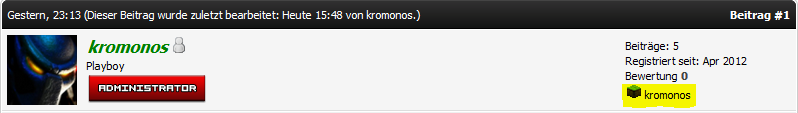

mc.uhuc.de:25565
Ja, wir beitreiben den IRC-Channel #minecraft auf jdqirc.net. Wenn du kein IRC-Programm installiert hast, kannst du auch den Webchat nutzen.
Nein, für die Sprachkommunikation verwenden wir Mumble. Der Server ist unter uhuc.de:64738 erreichbar.
Zwar ist der Server nicht passwortgeschützt, aber du kannst dir deinen Nick registrieren. Die Authentifizierung erfolgt dann über ein Zertifikat, welches lokal bei dir gespeichert wird.
Nein, der Server wird alleine vom Betreiber finanziert. Wer den Server jedoch unterstützen möchte, kann sich im Forum einbringen oder den Server weiterempfehlen.
Täglich um 1:00 Uhr in der Nacht wird ein Backup der Welt, sowie der Whitelist erstellt. Das Backup wird dann verschlüsselt auf andere Server kopiert.
Wir wollen den Nether möglichst sauber halten, deswegen für ein Portal bitte einen erfahrenen User um Hilfe bitten.
Zwei Möglichkeiten: Entweder du eröffnest einen Thread im Minecraft-Forum oder du kommst in den Chatraum.
Allgemeines zum Beitritt ist den Regeln zu entnehmen.
Im Benutzer Control-Panel unter "Dein Profil" findet sich der Punkt "Minecraft Account".
Dort gebt ihr euren MC Benutzernamen ein sowie euer Passwort:
Wichtig: Eure Benutzerdaten werden nicht gespeichert. Sie werden nur für diesen einen Schritt benötigt. Zudem: Wer zu paranoid ist sein Passwort (wenn auch nur kurz) kromonos zu überlassen kann es ja für diesen Zweck schnell auf minecraft.net ändern.
Nachdem ihr erfolgreich Bestätigt wurdet, seit ihr in der Benutzergruppe Minecraft. Ebenfalls seht ihr bei euren Beiträgen noch einen zusätzlichen Punkt:
Erstelle im Einweisungs-Forum (nur sichtbar mit einem verifizierten Account) einen Thread. Es sind dort keinerlei persönliche Informationen erforderlich. Wir bräuchten aber einen möglichen Termin für die Einweisung.
Wenn ein Einweisungstermin feststeht, installiere dir Mumble und sei zum Einweisungszeitpunkt im IRC-Channel #minecraft auf irc.jdqirc.net.
Die Baugenehmigungen dienen den Zweck, die Zustimmung der Community für dein Vorhaben zu bekommen. Dadurch wird sichergestellt, dass sich niemand auf die Füße getreten fühlt, wenn du irgendwo anfängst zu bauen. Da man keine klare Grenze ziehen kann zwischen »kleine Hütte« und »große Festung«, benötigt alles die Zustimmung der Community.
Es wirkt gerade am Anfang extrem lange. Aber in den 2 Tagen gibt man jedem Mitspieler die Möglichkeit sich zu dem Vorhaben zu äußern und nach Ablauf der Zeit kannst du dir dann sicher sein, ob die Community hinter deinem Projekt steht oder nicht. Die Wartezeit kannst du damit verbringen, Materialien wie Holz oder Stein zu Sammeln, die Zeit sparst du dir dann später.
Unser Ziel ist es nicht eine möglichst große Karte zu haben, welche von Oben aussieht wie ein Teller Spaghetti. Unsere Spieler sind mit dem Bauen und Craften an ihren Projekten beschäftigt und haben keine Zeit ergebnislos in der Gegend rumzulaufen, um die Map sinnlos zu vergrössern. Das sollte dir etwas darüber sagen wo hier unsere Prioritäten liegen.
In der ganzen Welt gibt es zahlreiche öffentliche Farmen. Für Nahrung (Getreide und Rinder) stehen in Uhuc-City jeweils eine Farm zur Verfügung. Im Keller des Rathauses ist eine Steinmine, Holz kann man zwischen den Vororten und Scranton-Village abbauen.
Für Diamanten, Redstone und Erze gibt es das 2. Tiefgeschoss der Bohrinsel. Sand gibt es in der eigens dafür eingerichteten Sandmine. Über das Vorgehen, steht hier etwas. Lehm kann man im Ozean vor Uhuc-City abbauen. Der Abbau ist allerdings schwierig, da man leicht ertrinken kann.
Es wird auch toleriert, wenn man nachwachsende Ressourcen in den Farmen anderer Spieler abbaut, jedoch müssen hierbei die Vorgaben des Besitzers eingehalten werden. Langfristig gesehen ist es jedoch sinnvoll sich Farmen innerhalb des eigenen Gebietes anzulegen.
Wir nutzen ein Tunnelsystem im Nether um in der Oberwelt schnell zu reisen, gennant »Grid«. Dieses ist aufgebaut wie eine U-Bahn, eine schematische Karte findet man hier. Wenn du auch ein Portal an das Grid angeschlossen haben willst, erstelle eine Baugenehmigung.
Nein, und mit hoher Wahrscheinlichkeit wird er das in nächster Zeit nicht. (Es ist keine Frage des Könnes - eher des Wollens.)